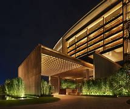
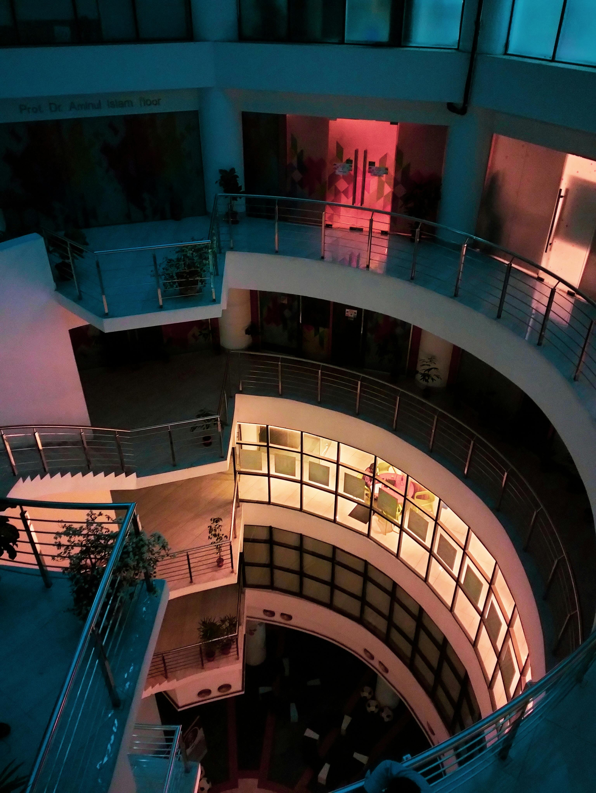

Filtrar por precios según:
-
.jpeg)
Hotel Sol Radiante
Cerca de la playa Ubicado en la pintoresca ciudad de Playa Dorada, este hotel ofrece habitaciones con vistas panorámicas al océano. Disfruta de la brisa marina mientras te relajas en la piscina de agua salada o saborea exquisitos cócteles en el bar de la azotea. El restaurante “Olas del Sabor” sirve platillos inspirados en la cocina local y mariscos frescos. Precio por noche: 90 dólares Reserva ahora$75
-
 Hotel Krystal
Centrico Este hotel ofrece habitaciones con techos altos y muebles de madera tallada a mano. El patio central está adornado con una fuente de azulejos y plantas tropicales. Precio por noche: 65 dólares Reserva ahora$65
-

Hotel Erma
Cerca de la playa Este lujoso resort se encuentra en la isla de Palmera Azul. Sus suites cuentan con jacuzzi privado y balcones con vistas al atardecer sobre el océano. El restaurante “Sirenas del Mar” ofrece una fusión de cocina mediterránea y caribeña. Precio por noche:95 dólares. Reserva ahora$95
-
Hotel Del Arte
Centrico Este hotel cuenta con habitaciones temáticas decoradas por artistas locales. La “Suite Frida” está llena de colores vibrantes y murales inspirados en la famosa pintora mexicana. El bar “Pinceles y Copas” ofrece cócteles creativos y música en vivo. Precio por noche: 47 dólares. Reserva ahora$47
-

Hotel Brisas del paraíso
Cerca de la playa Ofrece habitaciones con vistas panorámicas al océano. Disfruta de la brisa marina mientras te relajas en la piscina de agua salada o saborea exquisitos cócteles en el bar de la azotea. El restaurante “Olas del Sabor” sirve platillos inspirados en la cocina local y mariscos frescos. Precio por noche:80 dólares Reserva ahora$80
-

Hotel Palacio de las Olas
Cerca de la playa Un elegante hotel en Costa Esmeralda, con suites que incluyen balcones con vista al mar y bañeras de hidromasaje. El chef del hotel prepara especialidades locales con un toque gourmet. Precio por noche: 83 dólares Reserva ahora$83
-
 Refugio del viajero
Centrico Este hotel combina comodidad y conveniencia. Las habitaciones tienen un diseño moderno y están equipadas con tecnología inteligente. Precio por noche:40 dólares Reserva ahora$40